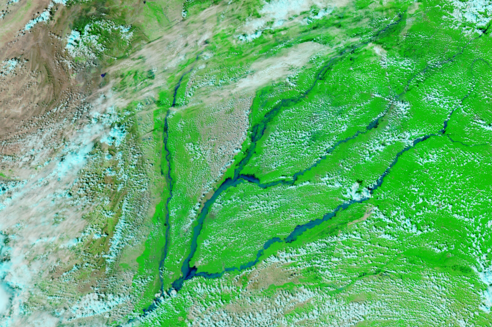

Monsoon Rains Flood Pakistan
A particularly strong monsoon has delivered above-normal levels of rainfall to parts of Pakistan since late June 2025. Extensive flooding has affected millions of people, destroyed infrastructure, inundated a large portion of the country’s agricultural land, and claimed hundreds of lives. The U.N. Office for the Coordination of Humanitarian Affairs has called the flooding in eastern Punjab province the worst in its history.
The image on the right shows flooding along major rivers in the region on September 9, 2025. For comparison, the left image shows the area on the same day in 2023, when monsoon rainfall amounts were close to normal. The images were acquired with the VIIRS (Visible Infrared Imaging Radiometer Suite) on the NOAA-20 satellite and are false-color to emphasize the presence of water.
Mid-August brought torrential rains to mountainous northern areas of the country, triggering damaging and deadly flash floods and landslides as the water worked its way downstream. By the end of the month, monsoon rain totals were 21 percent above normal nationwide and 36 percent higher in Punjab province. As of September 4, nearly 4 million people in eastern Punjab were affected, and close to 2 million were evacuated. About 4,000 villages were inundated by overflowing rivers.
In one of the many affected areas, river water from the flooded Ravi spilled into housing developments and submerged major thoroughfares in Lahore, the country’s second-largest city. Along the Chenab River, authorities evacuated more than 25,000 people—about half the population—from Jalalpur Pirwala by September 8, according to news reports, as waters rose and villages surrounding the city had already been submerged.
More evacuations took place in Sindh province, south of these scenes, in low-lying areas along the Indus River in anticipation of flooding. The flat plains of the Sindh region were among the worst-hit areas in the catastrophic monsoon floods in 2022.
In addition to affecting thousands of cities, villages, and other settlements, floodwaters have harmed an estimated 75 percent of the country’s farmland, according to news reports. Experts project significant losses to this year’s rice, sugarcane, and cotton crops.